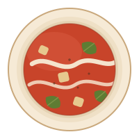

Classic
Chicken & Vegetable
Slow-simmered chicken, carrot, celery and leek in a clear golden broth. The one people come back for.
[$0.00] cup
Takeaway only · Monday to Friday · 11am–3pm
Four soups a day, cooked from scratch in our kitchen each morning — two classics and two that go a bit further. Ladled into a cup, lidded, and out the door.
On today
Two classics and two gourmet, cooked this morning and held hot until 3pm. Cup or bowl, always to take away.
Classic
Slow-simmered chicken, carrot, celery and leek in a clear golden broth. The one people come back for.
[$0.00] cup
Classic
Roasted pumpkin blended smooth with onion and a little cream, finished with toasted pepitas and cracked pepper.
[$0.00] cup
Gourmet
Chuck beef braised three hours with pearl barley, root vegetables and thyme. Thick enough to stand a spoon in.
[$0.00] cup

Gourmet
Slow-roasted tomatoes, garlic and torn basil, swirled with cream and scattered with croutons from yesterday's loaf.
[$0.00] cup
The board changes every day. Bowls and large cups are also available — ask at the counter.
Take it home
Whatever is left in the pots at 3pm gets chilled down the same afternoon and sealed into one-litre packs. Same soup, same day it was cooked — just cold, and enough to feed two or three.
[$0.00] per 1L pack, from the fridge at the counter
Stock depends on what's left over, so packs sell out. Ring ahead if you want a particular soup put aside.
The shop
We are a small shop on a single site with a stove, four pots and a counter. There is no second kitchen, no central production and nothing arrives frozen in a bag.
Stock goes on before six. The four soups are decided by what came in from the market that week, which is why the board is different on Tuesday to what it was on Monday. We make what we think will sell that day and no more — a short menu, cooked properly, is the whole idea.
It is takeaway only. Cups, lids and spoons at the counter, and a fridge of 1L packs by the door on the way out.
Find us
One shop, one address, weekdays only. We are not a van and we do not move around.
Street parking out front. Closest stop is [NEAREST TRANSPORT].
Get directions
| Monday | 11:00am – 3:00pm |
|---|---|
| Tuesday | 11:00am – 3:00pm |
| Wednesday | 11:00am – 3:00pm |
| Thursday | 11:00am – 3:00pm |
| Friday | 11:00am – 3:00pm |
| Saturday | Closed |
| Sunday | Closed |
Soups sell out before close on a cold day — earlier is safer.
Map goes here
Drops in once the street address is confirmed.